Четвертая часть цикла статей, подробно рассказывающих о протоколе MIDI.
В трех предыдущих статьях цикла были рассмотрены основные сообщения MIDI, посредством которых вот уже более двадцати лет общаются друг с другом электромузыкальные инструменты и приборы для работы со звуком. После выхода первой версии MIDI в 1983 году дальнейшее расширение протокола происходило своеобразными "волнами". Первые четыре года шла "притирка" и "обкатка" MIDI производителями. Пионерами здесь были Sequential Circuits и Roland, затем Yamaha, а за ними потянулись и остальные. Несмотря на серьезную критику, обрушившуюся на протокол, альтернатив ему, по большому счету, не было.
Первая волна расширений пришлась на 1987 год — появились MIDI Time Code и Sample Dump Standard. Затем — затишье, а с 1991 по 1992 год произошли самые масштабные дополнения, которые полностью раскрыли потенциал MIDI. Протокол стал применяться не только в "домашней" работе аранжировщика, но в студиях звукозаписи и постпроизводства, в кино- и видеоиндустрии, на концертах для управления звуком, светом, оборудованием сцены и даже пиротехникой.
Затем, до середины 90-х, наблюдалось очередное затишье, а начиная с 1996 года и по сей день происходит постоянное расширение MIDI, хотя и не такое значительное, как в предыдущие годы. Сейчас деятельность организации MMA направлена в область мобильных устройств и универсальных форматов представления данных (XML).
Расширениям протокола и будут посвящены несколько следующих статей цикла. В основном я постараюсь придерживаться хронологического порядка выхода официальных спецификаций, иначе мы утонем в перекрестных ссылках из одной спецификации в другую.
Тема сегодняшней статьи — первое расширение протокола, MIDI Time Code (MTC).
SMPTE
Основная причина появления MIDI Time Code — потребность в надежной и удобной системе синхронизации звукозаписывающего, кино- и видеооборудования с одной стороны и MIDI-секвенсоров и музыкальных инструментов — с другой. В мире профессиональной звукозаписи и кино-видеопроизводстве основным форматом синхронизации является SMPTE/EBU, принятый в 1971 году Обществом кино- и видеоинженеров США (Society of Motion Picture and Television Engineers, SMPTE). Позднее к нему присоединился Европейский союз вещателей (European Broadcast Union, EBU).
MIDI Time Code является своеобразным мостом между устройствами, работающими с SMPTE, и MIDI-устройствами. По сути, MTC — это метод передачи SMPTE по протоколу MIDI.
В SMPTE используется таймкод — блоки информации, передаваемые через равные промежутки времени одновременно со звуком или изображением, помечающие данный участок уникальной меткой времени. Время в SMPTE является абсолютным, измеряется в часах, минутах, секундах и кадрах (в одной секунде может быть от 24 до 30 кадров). Абсолютное время диктуется самой природой носителя (скорость движения ленты в многодорожечном или в видеомагнитофоне от музыкального темпа не зависит). Монтажные операции с кино- видео- и аудиоматериалом, указание позиций начала и окончания записи также удобнее производить, привязываясь к абсолютной шкале, а не к тактам и долям.
SMPTE содержит в себе одновременно и позиционную информацию (данные о времени), и информацию о скорости, которую можно вычислить из частоты поступления кадров. В системе, где необходимо синхронизировать несколько устройств, одно из них назначается ведущим (мастером), а все остальные — ведомыми (подчиненными). При воспроизведении в режиме синхронизации мастер генерирует таймкод, а подчиненные устройства под него подстраиваются. Если мастер является аналоговым устройством, то таймкод физически прописывается на ленту (то есть занимает звуковую дорожку). В цифровых устройствах таймкод может вычисляться прямо в процессе воспроизведения, либо прописываться в область субкода.
Таймкод SMPTE — это информация о времени и некоторых сопутствующих данных, представленная в цифровом виде. Однако реально цифрового сигнала SMPTE не существует, так как записать его "по битам" на аналоговый или видеомагнитофон нельзя. Поэтому используются два варианта сигналов, пригодных для записи: LTC (Longitudinal Time Code) и VITC (Vertical Interval Time Code). Первый представляет собой звуковой сигнал, полученный путем специального преобразования цифровой информации SMPTE. Второй является частью видеосигнала и записывается в строки, не содержащие изображения.
В SMPTE существуют четыре стандартных формата кадров:
При работе в чисто звуковом производстве выбор частоты кадров значения не имеет.
Простейшей единицей информации в SMPTE является блок данных, передаваемый каждый кадр реального времени, поэтому он так и называется — кадр SMPTE. В аудиопроизводстве, в основном, применяется LTC-вариант SMPTE, поэтому рассмотрим его формат подробнее. Для кодирования битов в аудиосигнале используется схема под названием Bi-Phase Mark: нули кодируются одиночным переворотом фазы на границе периода, единицы — двумя переворотами, один на границе периода, другой в половине периода (рис. 1). При частоте 30 fps скорость потока составляет 2400 бит/с. Частота потока нулей равна 1,2 кГц, потока единиц — 2,4 кГц. Надо сказать, что на слух все это звучит довольно противно.
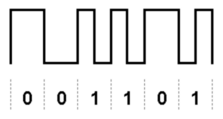
LTC-кадр имеет длину 80 бит. Структура кадра показана на рис. 2. Время SMPTE кодируется методом BCD (Binary Coded Decimal), редко применяющимся в современной технике. В этом методе под каждую десятичную цифру отводятся четыре бита, что нерационально (цифр всего десять, а места хватило бы и на шестнадцать). В кадре на запись времени отводятся 26 бит, между ними вклиниваются дополнительные данные, а завершается все синхрословом (последние 16 бит).
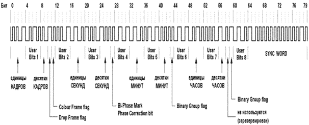
Большую часть дополнительных данных составляют так называемые пользовательские биты (User Bits), восемь групп по четыре бита. Они предназначены для передачи дополнительной информации, заданной пользователем, например, номера ленты или даты. Могут содержать четыре символа либо восемь цифр. Есть также несколько технологических битов, назначение которых не имеет смысла здесь описывать. Синхрослово используется для определения границы кадра, направления движения ленты, скорости потока и автокалибровки устройства, считывающего таймкод. Значение синхрослова фиксировано: 0011 1111 1111 1101.
MIDI Time Code
Протокол MIDI Time Code состоит из двух основных частей: сообщений, отвечающих за передачу таймкода SMPTE, и сообщений управления событиями (MIDI Cueing). Передача таймкода — процесс очевидный: текущее время SMPTE упаковывается в обычные сообщения MIDI, которые распространяются по MIDI-кабелю к потребителям. Источником MTC могут быть синхронизаторы — специальные приборы, преобразующие LTC- или VITC-вариант сигнала SMPTE, поступающего от мастера, в сигналы разных типов, в том числе и в сообщения MIDI Time Code. Второй вариант — прямое генерирование MTC секвенсором на основе размера и темпа произведения, либо цифровым магнитофоном или компьютерной рабочей станцией на основе частоты дискретизации и порядкового номера семпла.
Вторая составляющая MTC, MIDI Cueing — это нечто особенное, не имеющее аналогов в SMPTE: способ автоматизации работы MIDI-системы на основе запрограммированного списка событий.
Далее речь пойдет о структуре MTC, без обсуждения практических аспектов, а также оборудования для синхронизации и управления. Поэтому, если вы не сталкивались с этой темой ранее, приведенный материал может показаться довольно абстрактным. Однако таков замысел цикла: сначала мы рассматриваем язык общения устройств, после чего — физическую реализацию протокола, и только потом сами устройства с особенностями их использования.
Quarter Frame
Основное сообщение MTC для передачи таймкода называется Quarter Frame (четверть кадра), как следует из названия, оно передается четыре раза за SMPTE-кадр. В режиме синхронной работы от мастера к ведомым устройствам поступает непрерывный поток сообщений Quarter Frame, так что здесь прослеживается аналогия с сообщением MIDI Clock (см. предыдущую статью). Однако между этими сообщениями есть принципиальная разница: частота потока Quarter Frame не зависит от текущего темпа, а определяется выбранным форматом кадров SMPTE. Так, при 30 fps один "тик" Quarter Frame будет происходить каждые 8,3 мс. Однако только "тиками" в системе синхронизации по абсолютному времени не обойтись. Нужно передавать само время, как это и происходит в SMPTE.
Правда, здесь возникает сложность — как передать 80-битный кадр в одном сообщении Quarter Frame? Решение нашлось простое. Во-первых, не всю информацию из этих 80 бит нужно передавать с каждым тиком, достаточно будет текущего времени, а пользовательские данные и биты состояния можно передать дополнительно, с другими сообщениями. Во-вторых, время можно передавать поэтапно: в первом сообщении Quarter Frame передать кадры, во втором — секунды, и так далее. В результате получилась структура, приведенная на рис. 3.
Сообщение Quarter Frame относится к категории общесистемных и состоит из статус-байта 0xF1 и одного байта данных. Этот байт делится на две части: первая (биты 4, 5 и 6) содержит тип данных, а сами данные хранятся во второй части (младшие четыре бита, рис. 3). Тип данных — это не что иное, как часы, минуты, секунды или кадры. Правда, с помощью четырех оставшихся бит много информации не передашь, поэтому значение величины (например, номера кадра) формируется из двух последовательных сообщений Quarter Frame. Четыре бита данных первого сообщения объединяются с четырьмя битами второго, образуя байт данных, который затем и принимается к обработке. Так что первое сообщение будет иметь тип, скажем, "номер кадра, младшая половина значения", а второе — "номер кадра, старшая половина".
Простой пример: получены два сообщения Quarter Frame, байт данных первого равен 00000011, второго — 00010001. Тип данных первого (биты 4, 5, 6) имеет номер 0, то есть "номер кадра, младшая половина", второго — "номер кадра, старшая половина". Объединяя биты данных, получаем 00010011, то есть номер кадра равен 19. С секундами, минутами и часами все аналогично. Правда, итоговый байт расшифровывается по-разному (рис. 4).
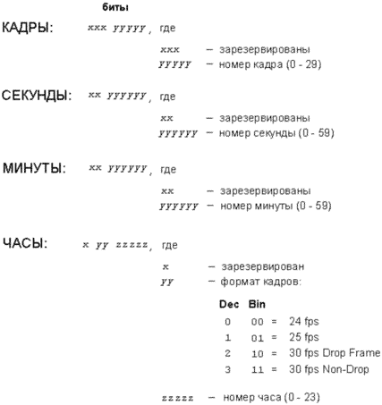
Для номеров кадров используются только пять младших битов (старшие три бита должны быть нулевые и приемником игнорироваться). Диапазон номеров — от 0 до 29, первый кадр имеет номер 0. Для секунд и минут — шесть младших битов (диапазон от 0 до 59). Для часов итоговый байт содержит две величины: собственно номер часа (младшие пять бит) и частоту кадров (биты 5 и 6). Старший бит игнорируется. Расшифровка частот кадров приведена на рис. 4. Стоит заметить, что в стандарте SMPTE частота кадров в самом кадре не кодируется, а определяется приемником самостоятельно.
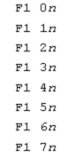
Если тайм-код передается в прямом направлении (то есть время идет вперед), то устройство, генерирующее MTC, посылает восемь сообщений Quarter Frame в показанном на рис. 5 порядке с интервалом в четверть кадра между каждым сообщением, после чего процесс повторяется. Если отсчет времени идет назад, то сообщения передаются в обратном порядке, начиная с 0xF1 0x7n и заканчивая 0xF1 0x1n. В любом случае передаются все восемь сообщений, иначе приемник не получит полного значения времени.
Таким образом, на передачу информации об одном кадре SMPTE затрачивается время, равное двум кадрам (8 х 1/4). А значит, при преобразовании SMPTE в MTC только каждый второй кадр попадает в MIDI-таймкод. Это несколько снижает скорость реакции ведомого устройства — для того, чтобы "зацепиться", ему нужно прочитать восемь сообщений Quarter Frame в указанном на рис. 5 (или обратном) порядке. В реальном времени это может занять от двух до четырех кадров, в зависимости от момента начала считывания. С другой стороны, информация о скорости (извлекаемая по времени прихода сообщения Quarter Frame) приходит в четыре раза чаще по сравнению с SMPTE, что способствует более качественной синхронизации.
Теперь пара тонкостей. В SMPTE (в варианте LTC) приемник считает за начало кадра момент получения первого бита 80-битной посылки. В MTC за начало кадра считается момент прихода первого и пятого сообщения Quarter Frame в серии, то есть 0xF1 0x0n и 0xF1 0x4n. Но время-то можно прочитать только после того, как будут получены все восемь сообщений серии. К этому моменту полученное значение времени устареет на два кадра. Для отображения на дисплее правильного времени приемное устройство должно прибавить к считанному значению поправку в эти самые два кадра. При обратном отсчете времени поправка не нужна — время считывается после прихода сообщения 0xF1 0x0n, то есть в момент реального начала кадра.
По идее, после однократного считывания времени приемник может просто подсчитывать сообщения Quarter Frame и самостоятельно крутить стрелки на своем "циферблате", так как число кадров в секунду также содержится в считанном значении. Однако спецификация требует постоянной "сверки часов", то есть извлечения реально переданного времени после каждых восьми сообщений Quarter Frame.
На рис. 6 показан пример передачи SMPTE-времени 02:44:39:12 в виде серии из восьми сообщений Quarter Frame (частота кадров — 30 fps, non-drop). Стоит отметить, что для частот 24, 30 drop frame и 30 non-drop номера кадров в сообщениях Quarter Frame будут всегда четные, а для частоты 25 fps — четные будут меняться на нечетные каждую секунду. Связано это с тем, что половина кадров SMPTE в MIDI Time Code не попадает.
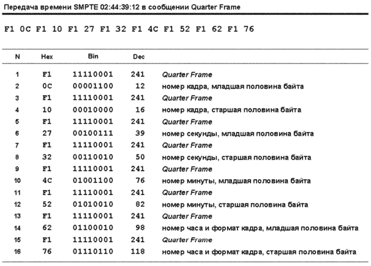
Может показаться, что сообщения Quarter Frame сильно загружают канал передачи. Давайте подсчитаем. Скорость передачи данных по MIDI-кабелю составляет 31250 Кбит/с. Реально для передачи каждого байта требуются не восемь, а десять бит (почему — поговорим в статье об аппаратной реализации интерфейса). Следовательно, время передачи одного байта составляет 320 микросекунд (10 / 31250). Возьмем самую высокую частоту кадров SMPTE — 30 fps. Каждое сообщение Quarter Frame состоит из двух байт, и эта пара будет передаваться 120 раз в секунду (30 fps х 4 сообщения на кадр). В данном случае канал будет занят 640 мкс каждую 1/120 секунды, или 7,68% времени. А это значит, что кроме MIDI Time Code по тому же кабелю спокойно может пройти еще и насыщенная аранжировка. И хотя на практике мешать синхросигнал с рабочими данными не принято (под MTC отводится отдельный порт), особых препятствий для этого нет.
Full Frame
Несмотря на предыдущий оптимистичный вывод, возможны ситуации, когда сообщения Quarter Frame займут всю полосу пропускания MIDI и даже перегрузят канал передачи. Например, при воспроизведении на повышенной скорости, при перемотке ленты в многодорожечном или видеомагнитофоне. В этом случае исходный SMPTE-таймкод начнет поступать в генератор MTC с большой скоростью, и абсолютное время понесется с бешеным темпом. Реальная частота кадров возрастет настолько, что MIDI-шина окажется перегруженной.
Для таких случаев разработчики MTC предусмотрели сообщение Full Frame (полный кадр). Оно содержит временную координату целиком и посылается мастером периодически, отмечая текущую позицию времени приблизительно. Ведомые устройства "слушают" эти сообщения и перемещают свои курсоры (позиции локации) вслед за мастером. После того, как перемещение курсора в мастере закончилось и включился режим обычного воспроизведения, мастер снова посылает поток сообщений Quarter Frame. В современных системах записи на диск перемещение курсора выполняется практически мгновенно, а вот в механических устройствах (аналоговых или цифровых ленточных магнитофонах) для этого требуется время, особенно в момент перехода от перемотки к нормальному воспроизведению. Поэтому мастеру рекомендуется делать паузу между последним сообщением Full Frame и следующим за ним Quarter Frame, чтобы все устройства системы успели подготовиться к воспроизведению с новой позиции.
Таким образом, сообщение Quarter Frame используется только в режиме обычного воспроизведения, во всех других случаях генератор MTC должен передавать Full Frame.
Сообщение Full Frame относится к группе универсальных сообщений SysEx реального времени и имеет структуру, показанную на рис. 7. После заголовка следует номер устройства в системе (Device ID, см. предыдущую статью). Напомню, номер 0x7F (127) означает, что сообщение будет передано широковещательно, то есть всем устройствам системы. Следующий байт, Sub ID, определяет категорию сообщения, в данном случае он равен 1 (категория MIDI Time Code, Long Form, см. предыдущую статью). На случай возможных расширений введен также уточняющий байт Sub ID 2, который для сообщения Full Frame также равен 1. Наконец, идут четыре байта данных: часы, минуты, секунды и кадры. Эти байты имеют ту же структуру, что и байты, полученные при объединении пар сообщений Quarter Frame (см. ранее). Так что байт часов содержит еще и частоту кадров. Завершается сообщение, как обычно, байтом EOX.
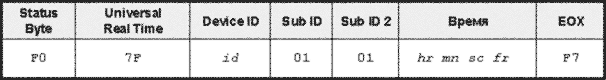
User Bits
Разработчики MTC не забыли и про пользовательскую информацию, передаваемую в кадре SMPTE. Учитывая то, что эта информация обычно не изменяется на протяжении всего сеанса синхронизации, нет надобности и передавать ее так часто, как в SMPTE. Для этих целей используется специальное сообщение SysEx. Его можно передать при инициализации устройств MIDI-системы, или несколько раз по ходу работы — пользовательская информация не критична к точному времени доставки.
Структура сообщения User Bits аналогична сообщению Full Frame (рис. 8). Только номер подкатегории (Sub ID 2) здесь равен 2 и используются девять байт данных. Первые восемь из них содержат в старшей половине нули, а в младшей — биты из двоичных групп SMPTE, с первой по восьмую соответственно. Девятый байт сообщения содержит в двух младших битах флаги Binary Group Flag из кадра SMPTE.
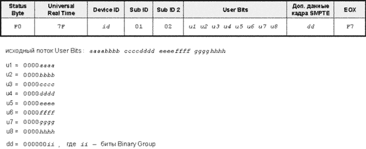
Notation Information
К категории "информация о нотации" относятся два сообщения, описывающие текущий музыкальный размер с настройкой метронома и номер такта. Эти сообщения были добавлены в спецификацию MIDI в конце 1991 года и помещены в группу универсальных сообщений SysEx реального времени.
Сообщение Time Signature (музыкальный размер) существует в двух вариантах: "немедленном" (Sub ID 2 равен 2) и "задержанном" (Sub ID 2 равен 42). При получении первого приемник должен сразу же изменить текущий музыкальный размер, второго — по окончании текущего такта. В остальном эти сообщения идентичны и имеют структуру, показанную на рис. 9. Байт данных ln содержит количество байт, следующих за ним, до завершающего EOX. В большинстве случаев оно равно трем — числитель/знаменатель размера (nn / dd) и байт qq, который определяет количество сообщений MIDI Clock, приходящихся на каждый удар метронома. Числитель записывается "как есть", знаменатель — как степень двойки. Например, при размере 6/8 байт nn будет равен 6, байт dd — 3. При составном размере внутри такта (например, 3/4 + 7/4), за байтом qq могут следовать дополнительные пары байт nn и dd, а, следовательно, значение ln будет больше 3.
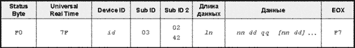
Сообщение Bar Marker (Sub ID 2 равен 1, рис. 10), передается в момент начала очередного такта (вернее, непосредственно перед сообщением MIDI Clock или Quarter Frame, с которого начинается такт). Сообщение облегчает работу приемному устройству — зная то, на какое место такта приходятся позиции начала/окончания записи, приемник может по-разному эти позиции обрабатывать. Текущий номер такта может отображаться на дисплее (например, мастер-клавиатуры), что очень удобно для музыканта. Самое главное, сообщение Bar Marker, в отличие от Song Position Pointer (см. предыдущую статью), может передавать текущую позицию перед началом песни, то есть "затакт".
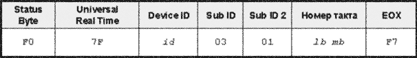
Структура сообщения такая. За стандартным заголовком следуют два байта (lb и mb), которые содержат номер такта, целое 14-битное число со знаком (младшие семь бит находятся в байте lb, старшие — в mb; о компьютерном представлении целых отрицательных чисел рассказано во врезке). Так что номера тактов получаются в диапазоне от -8192 до +8191. Положительные номера означают текущий номер такта, а также косвенно говорят о том, что передающее устройство находится в режиме воспроизведения. Нумерация тактов идет с единицы, так что получение байтов lb mb = 0x01 0x00 означает, что начался первый такт. Максимальное положительное значение (lb mb = 0x7F 0x3F) говорит о том, что воспроизведение идет, но номер текущего такта неизвестен или не имеет значения. Отрицательные номера означают "затакт" (отсчет перед воспроизведением). Например, получая -1 (lb mb = 0x7F 0x7F), приемник понимает, что до начала воспроизведения остается один такт, о чем можно известить и музыканта. Максимальный отрицательный номер (lb mb = 0x00 0x40) говорит о том, что воспроизведение остановлено.
Представление целых чисел со знаком
В обыденной жизни для того, чтобы записать отрицательное число, мы просто ставим перед ним знак "минус". Компьютер же никаких знаков не понимает и умеет работать только с битами, которые могут принимать одно из значений: 0 или 1. При работе с целыми числами всегда используется фиксированное число разрядов (бит). Например, если у нас есть четыре разряда, то мы можем сохранять числа от 0 до 15 (24-1). Это что касается положительных чисел. А как же с отрицательными?
Раз никаких средств поставить "черточку" перед нашими четырьмя битами нет, выделим один из них, например старший, в качестве индикатора знака. Если он равен нулю — число положительное, если единице — отрицательное. Тогда на представление самого числа останутся три бита (а, следовательно, диапазон возможных абсолютных значений сократится вдвое). Есть несколько способов, как использовать эти биты. Первый — записывать в них значение числа по модулю. Вроде бы все просто: число +5 будет выглядеть как 0101, а число -5 — как 1101. Однако такой способ имеет недостатки: во-первых, у нас получаются два представления нуля, +0 (0000) и -0 (1000), а во-вторых, алгоритм сложения и вычитания в микропроцессоре будет сложным и неэффективным.
В большинстве современных процессоров (и, естественно, в MIDI) используется модификация этого способа. Старший бит по-прежнему является показателем знака числа. Положительное число записывается в оставшиеся биты как обычно, а отрицательное занимает все биты в виде так называемого двоичного дополнения своего абсолютного значения. Предположим, нужно записать число -5. Для этого выполняем операцию двоичного дополнения над абсолютным значением (5): инвертируем каждый бит (вместо нуля пишем единицу, и наоборот), а к полученному числу прибавляем 1 (рис. 11). Интересно, что выполнив эту процедуру еще раз, мы получим исходное абсолютное значение.
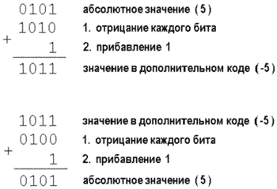
Наглядное пояснение к такому способу представления дает рис. 12 — числовая прямая при ограниченном диапазоне чисел может быть свернута в круг. На рисунке круг содержит четырехзначные двоичные значения, хотя такое же построение можно провести для любого количества разрядов. Двоичные значения в круге можно рассматривать либо как беззнаковые (тогда их диапазон будет от 0 до 15), либо как числа со знаком (в диапазоне от -8 до +7). В этом состоит одна из главных особенностей представления данных в компьютере: для него любые данные — набор битов, а как их интерпретировать, зависит от программы. Может показаться, что отрицательных чисел здесь на одно больше, чем положительных. Но если ноль принять за положительное число, то все будет "по-честному".
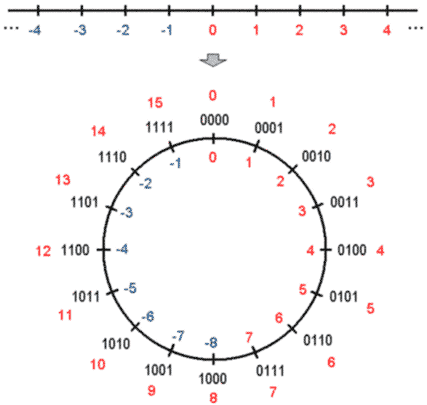
Какие преимущества в таком способе? Во-первых, остается только одно представление нуля. Во-вторых, значительно облегчаются арифметические операции, в частности, довольно сложная (для процессора) операция вычитания может быть выполнена с помощью сложения! Например, для вычитания 3 - 7 компьютер складывает 3 (0011) и двоичное дополнение числа 7 (1001, то есть беззнаковое 9, см. на круге). В результате получается 12 (1100), или -4.
Особенность двоичного дополнения: при разном количестве разрядов одно и то же отрицательное число соответствует разным числам без знака. Так, в предыдущем примере (при разрядности четыре бита) беззнаковому 12 соответствовало -4. Если использовать для хранения числа восемь бит (то есть байт), то -4 будет записано как 11111100, то есть как беззнаковое 252. Есть правило, которое можно использовать для нахождения такого соответствия при любом числе разрядов: нужно сложить отрицательное число с числом 2N, где N — число разрядов.
В MIDI чаще всего используются 14-битные числа со знаком, то есть в диапазоне от -8192 до +8191. Приведу пример упаковки отрицательного числа в форме двоичного дополнения в MIDI-пару LSB/MSB. Пусть число будет -5833. Складываем его с 16384 (214), получаем 10551. Это и будет беззнаковое представление -5833 при разрядности 14 бит. Упакуем его в пару MSB/LSB (подробнее об этом см. вторую статью цикла): MSB = 82 или 0x52 (10551/128), LSB = 55 или 0x37 (10551 — (82 х 128)).
MIDI Cueing
MIDI Cueing — это часть протокола MTC, предназначенная для автоматизированного управления устройствами MIDI-системы на основе списка событий. Точный перевод слова Cueing на русский язык вряд ли возможен. Наиболее подходящий в данном случае вариант — "управление временнЫми метками" (cue points).
Основная задача MIDI Cueing — облегчить работу инженера в сложной системе, состоящей из звуковоспроизводящих и записывающих устройств, видеомагнитофонов, MIDI-секвенсоров, процессоров эффектов, тон-генераторов и другого оборудования, характерного для студий по озвучиванию кино-видеоматериалов и постпроизводства. Ручная настройка необходимых параметров в каждом устройстве (например, позиций начала и окончания записи, воспроизведения, смещения таймкода относительно мастера) отнимает значительное время, а при необходимости частого изменения превращается в головную боль.
MIDI Cueing предлагает автоматизацию рабочего процесса. Центральным элементом системы является менеджер событий (Cue List Manager) — устройство или компьютерная программа, которая позволяет запрограммировать список событий, а затем послать этот список в подчиненные устройства. Для каждого события в списке задано SMPTE-время исполнения. При наступлении этого времени устройство выполняет событие (а если точнее, действие, сопоставленное с событием). Естественно, для этого необходимо получать от мастера таймкод.
Если устройства не могут обрабатывать список событий самостоятельно, но имеют MIDI-интерфейс, то для управления ими может использоваться секвенсор, который принимает список событий, а затем, по наступлении указанного времени, преобразует событие в команды, понятные устройству (Note On, Note Off, Start, Stop и т. п.).
Для реализации протокола MIDI Cueing используются так называемые сообщения настройки (Set-Up Messages). В каждом сообщении указывается тип события, его номер и время исполнения. Таким образом, список событий передается в виде сообщений настройки.
Относятся они к группе универсальных сообщений SysEx (Non-Realtime) и имеют структуру, показанную на рис. 13. Байт Sub ID равен 4 (категория MIDI Time Code Setup), а из возможных 128 событий (байт Sub ID 2) в настоящий момент определены 19. После байта Sub ID 2 следует время SMPTE, к которому относится событие: часы, минуты, секунды, кадры и доли кадра. В сообщениях настройки каждый кадр подразделяется на 100 субкадров, что позволяет указать время наступления события с очень высокой точностью. Номер события (от 0 до 16383) передается в следующих двух байтах (LSB идет первым).
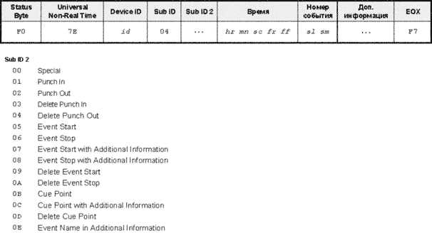
Далее может следовать дополнительная информация одного из двух видов: обычные сообщения MIDI или простой текст (набор ASCII-символов). Эта информация используется в некоторых сообщениях настройки для более тонкого управления устройством. Однако есть небольшая проблема — как передать сообщения MIDI в теле сообщения настройки? Если делать это непосредственно, то они сразу же начнут выполняться приемником, да еще и логика сообщения SysEx нарушится: перед завершающим байтом EOX появятся непредусмотренные статус-байты. Такая же проблема будет и с текстом. Поэтому используется своеобразное экранирование: исходные байты, которые нужно передать в качестве дополнительной информации, разбиваются на половины. К каждой половине слева приписываются четыре нулевых бита, в результате она становится разрешенным байтом данных MIDI. Сначала передается младшая половина исходного байта, затем старшая. Естественно, размер полученного потока будет вдвое превышать исходный.
Например, сообщение о нажатии клавиши (три байта: 0x91 0x3A 0x1F) будет преобразовано в шесть байт данных: 0x01 0x09 0x0A 0x03 0x0F 0x01. А, скажем, английская заглавная буква "A" (ASCII-код 0x41) будет представлена двумя байтами: 0x01 0x04.
Есть также группа сообщений настройки под общим названием Real Time MTC Cueing (относятся к типу универсальных сообщений SysEx реального времени, Sub ID равен 5). Если обычные сообщения настройки задают время наступления события в будущем, то при получении сообщений этой группы приемник должен выполнить событие немедленно.
Сообщения настройки
В сообщении Special (Sub ID 2 равен 0x00) передается информация глобального характера, касающаяся всего устройства в целом. Эта информация представлена набором из шести команд, номер команды передается в байтах sl и sm вместо номера события.
Команда Time Code Offset (0x00 0x00) задает смещение по времени в конкретном приборе относительно времени, передаваемого мастером. Например, стоит задача синхронизировать видеофрагмент с каким-либо звуковым фрагментом, однако прописаны они с разного абсолютного времени. Для того, чтобы оба фрагмента стартовали одновременно, в устройстве, воспроизводящем звук, нужно выставить соответствующую поправку.
Команда Enable Event List (0x01 0x00) разрешает прибору выполнение событий из своего списка (при наступлении заданного времени), команда Disable Event List (0x02 0x00) — запрещает, но при этом события не должны удаляться из списка. Последняя команда удобна для временного "заглушения" активности какого-либо из приборов сложной MIDI-системы. Команда Clear Event List (0x03 0x00) заставляет прибор очистить свой список событий. Во всех трех командах время, переданное в сообщении, игнорируется.
Команда System Stop (0x04 0x00) сообщает ведомому устройству время, при наступлении которого оно может быть выключено. Последняя команда в этой категории, Event List Request (0x05 0x00), посылается мастером при необходимости получить список событий от какого-либо подчиненного устройства. Устройство, чей Device ID указан в сообщении, должно отправить мастеру свой список событий в виде серии сообщений настройки. Отправка должна начаться со времени, переданного в сообщении.
Сообщения Punch In и Punch Out (Sub ID 2 равен 0x01 и 0x02 соответственно) задают позиции начала и окончания записи на дорожке. Номер дорожки содержится в байтах sl и sm. Для последующего удаления этих позиций из списка событий служат сообщения Delete Punch In и Delete Punch Out (0x03 и 0x04 соответственно). Конкретная позиция распознается по номеру события и времени его наступления.
Сообщения Event Start и Event Stop (0x05 и 0x06) предназначены для указания позиций, в которых начинается и оканчивается некоторый процесс, например, воспроизведение семпла, передвижение фейдера на микшере с автоматизацией и тому подобное. В сообщениях передается номер события, а что именно будет происходить, зависит от того, какое действие сопоставлено с этим номером в подчиненном устройстве. Если нужно передать какие-либо параметры события (например, настройки процессора эффектов, уровень громкости и т. п.), используются сообщения Event Start/Stop with Additional Information (0x07/0x08), которые отличаются от двух предыдущих тем, что содержат между номером события и байтом EOX дополнительную информацию (о правилах ее кодирования говорилось ранее). Для удаления позиций начала/окончания процесса используются сообщения Delete Event Start/Stop (0x09/0x0A).
В списке событий могут быть также простые события, которые выполняются "за раз" и не требуют указания позиции окончания. Типичный пример — хит-пойнты (точки привязки) в звуковых эффектах, маркеры монтажа и редактирования. Для указания позиции размещения такого события (Cue Point) применяются сообщения Cue Point (0x0B) и Cue Point with Additional Information (0x0C). Пример: пусть событие номер 8 означает воспроизведение семпла бьющегося стекла. Тогда для того, чтобы "разбить" с некоторым интервалом пару тарелок, нужно послать два сообщения Cue Point с номером 8, но разным временем исполнения. Для удаления позиции из списка событий служит сообщение Delete Cue Point (0x0D).
Наконец, последнее сообщение настройки, Event Name with Additional Information (0x0E), присваивает имя событию с определенным номером, происходящему в заданное время. Имя указывается в виде преобразованного ASCII-потока (см. ранее). Предназначено это сообщение исключительно для удобства — с именованным событием работать легче.